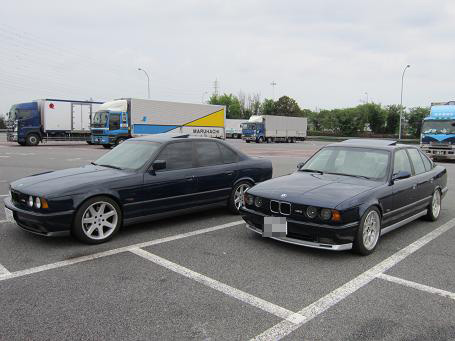
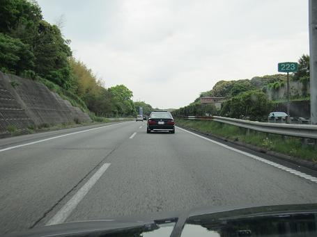
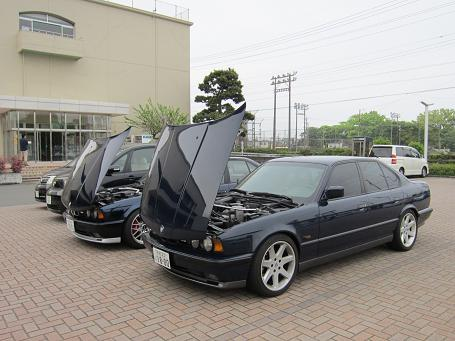
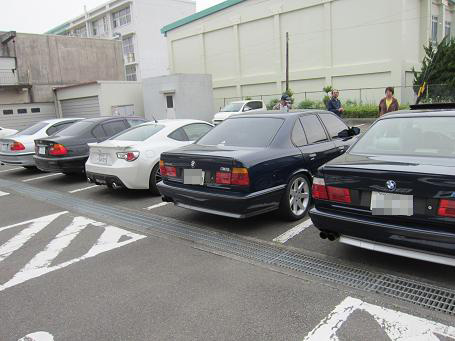
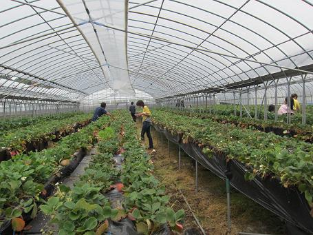
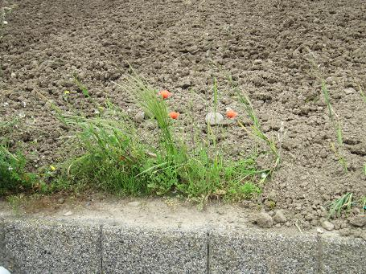
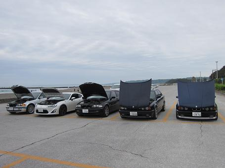
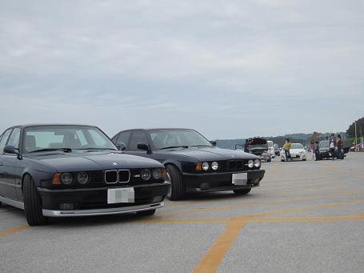
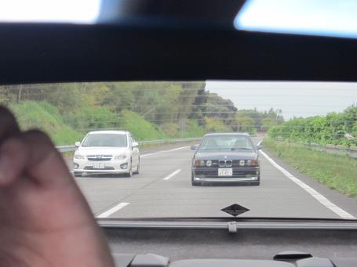
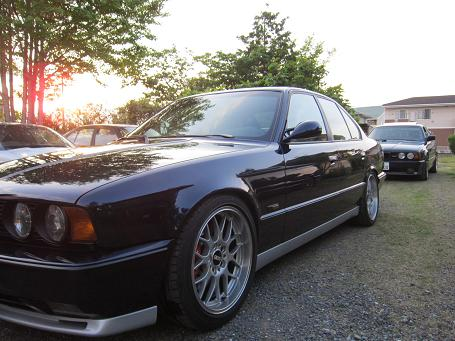

2015/4/29 静岡イチゴオフ
数年ぶりに「静岡イチゴオフ」が開催されることに！
静岡のE34な皆さんと会うのも数年ぶりだ。
 
遠州豊田SAでshin5さんと待ち合わせ！ 数年ぶりの再会だ。
M5に乗り換えたshin5さんと高速を初のトレイン走行＾＾！ 必死に追う・・・・！ はっ・・・速いぞ（汗


意識が戻ると集合場所の牧の原市役所に着いていた（笑
集合した５台！ ３４が２台しかないぞorz
ちなみに４６は野良猫さんとそのお友達の車 ８６は港のイチローさんの愛車（なんと増車！！）だ＾＾

1000円払って入場です！ 陽の良くあたる場所は甘いイチゴになるようだ！
まぁ・・・ イチゴもたくさん食べれないので・・・
・
・
・
・
・

ほとんど風に揺れるスイートピーを見ていた気がする（笑


解散前に記念撮影でも！ ってことで海沿いに整列！
落ち着いたところでE３４ ２台は抜け出して撮影大会＾＾！ 思う存分撮影した後はみなさんとお別れして・・・

sｈin5さんとまた高速に！ こんな感じで後ろに張り付かれながら・・・（笑

DOPさんの所へ＾＾
ここへ来ると何かしらE34な知識が増える！
今回は、板金屋お手上げで諦めていたボンネットのチリが・・・・ DOPさんの手によって１０分で直った（汗
まだまだ知らないことがたくさんある。
久しぶりに静岡の皆さんに会えて楽しかった。
イチゴの段取りをしていただいた野良猫さん、突然の襲撃にもかかわらず相手していただいたDOPさんありがとうございました。
たまには是非関西へm(__)m